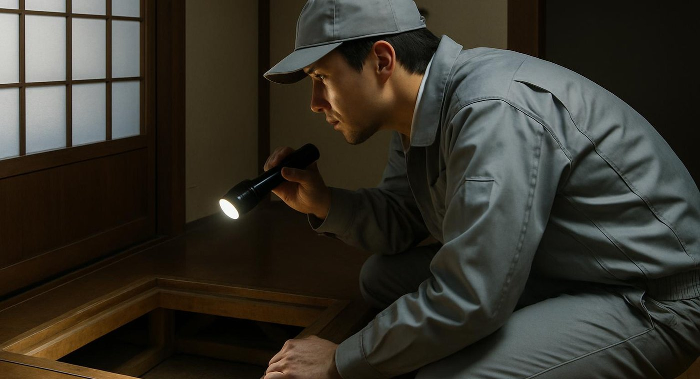

売却前の建物状況調査は、買主の安心と価格交渉の両方に役立ちます
「古い空き家を売りたいけど、どんな状態か自分でもよく分からない」――そんな時に役立つのがインスペクション（建物状況調査）です。売却前に建物の状態を客観的に把握しておくことで、スムーズな売却につながります。この記事では、インスペクションの基本と、鹿児島の空き家売却における活用法を解説します。
インスペクション（建物状況調査）とは
インスペクションとは、既存住宅状況調査技術者などの資格を持つ専門家が、建物の劣化状況や欠陥の有無を目視で調査する制度です。構造耐力上主要な部分（基礎・柱・梁など）や、雨漏りの跡などを中心に確認します。
宅地建物取引業法の改正により、不動産の売買時には宅建業者からインスペクションの活用について説明する義務が課されています。義務化されているのは「説明」までで、調査の実施自体は任意ですが、活用するオーナーは年々増えています。
なぜ空き家の売却前に有効なのか
買主の安心材料になる
特に空き家は「長年人が住んでいない＝状態が分からず不安」と敬遠されがちです。事前にインスペクションを実施し、結果を開示することで、買主に安心感を与え、成約につながりやすくなります。
契約後のトラブルを予防できる
売却後に「実は雨漏りがあった」といった欠陥が見つかると、契約不適合責任を問われるリスクがあります。事前に調査して状態を開示しておくことで、こうしたトラブルを未然に防げます。
価格交渉の材料になる
調査結果が良好であれば、その旨を売却活動でアピールできますし、逆に軽微な補修が必要な箇所が見つかった場合も、価格に織り込んで納得感のある取引にしやすくなります。
調査でチェックされる主な項目
| 調査部位 | 主な確認内容 |
|---|---|
| 構造耐力上主要な部分 | 基礎のひび割れ、柱・梁の傾き・腐食 |
| 雨水の侵入を防ぐ部分 | 屋根・外壁のひび割れ、雨漏りの跡 |
| 給排水管 | 漏水・詰まりの有無 |
| シロアリ被害 | 床下・柱周辺の被害痕跡 |
費用相場と依頼の流れ
戸建てのインスペクション費用は、5万円前後が目安です（延床面積や調査項目により変動）。地元の建築士事務所や、既存住宅状況調査技術者が所属する団体に依頼するのが一般的です。TAMARIEでも提携事業者のご紹介が可能です。
- 築年数が古く、自分では状態を把握しきれていない
- 仲介で市場価格に近い金額での売却を目指したい
- 相続した物件で、これまでの管理状況が分からない
- 契約後のトラブルを避け、安心して取引を終えたい